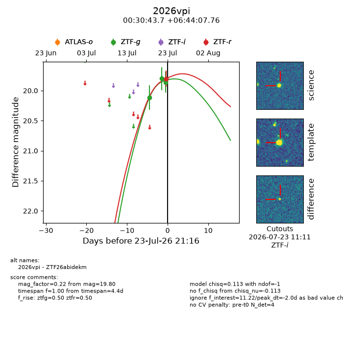
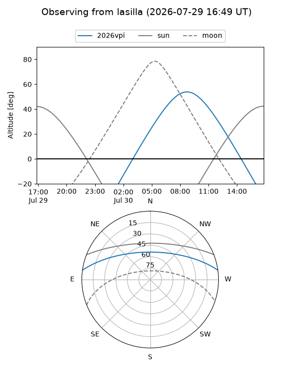
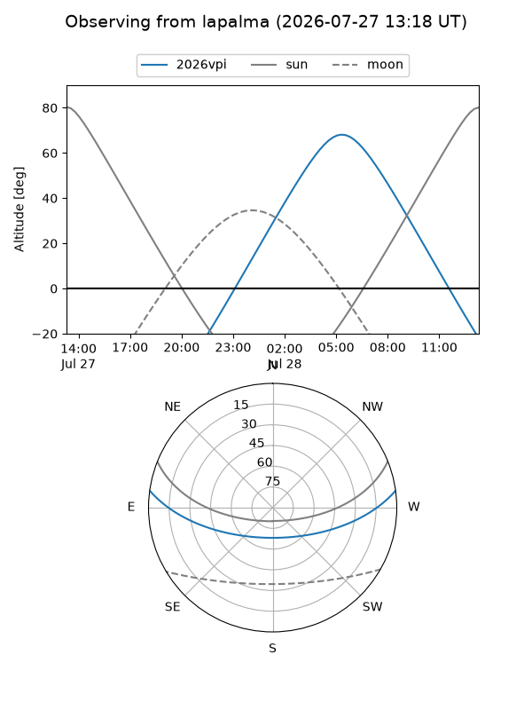
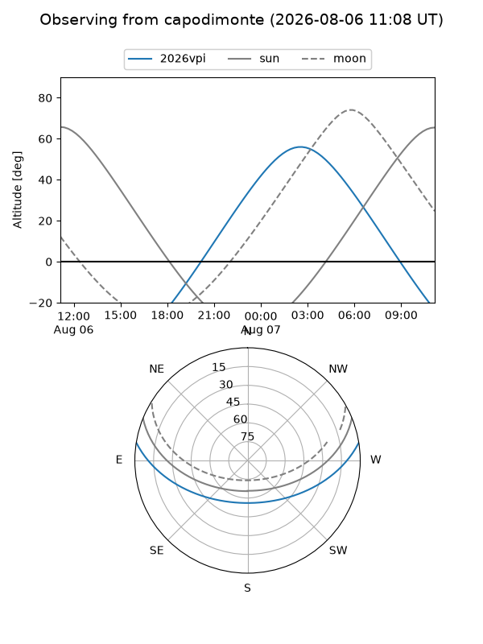
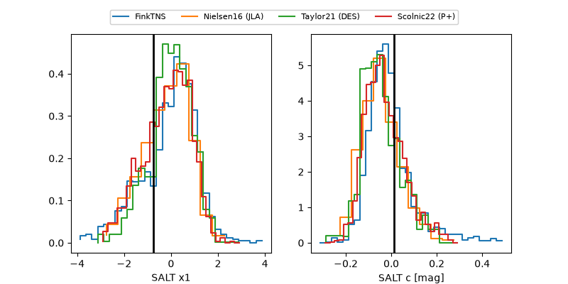

2026vpi
Target 2026vpi at 2026-07-23 21:19
Aliases and brokers:
FINK-ZTF: ztf.fink-portal.org/ZTF26abidekm
Lasair-ZTF: lasair-ztf.lsst.ac.uk/objects/ZTF26abidekm
ALeRCE-ZTF: alerce.online/object/ZTF26abidekm
YSE-PZ: ziggy.ucolick.org/yse/transient_detail/2026vpi
TNS name: wis-tns.org/object/2026vpi
Direct TNS query: direct search
alt names
ZTF26abidekm (ztf,fink_ztf)
2026vpi (tns,yse)
Coordinates:
equatorial (ra, dec) = 7.6823,+6.73549
equatorial (HMS+DMS) = 00:30:43.75,+06:44:07.76
galactic (l, b) = (113.7658,-55.76727)
Flags:
peak dt: -2.0
Photometry:
last ztfg=19.86, ztfr=19.80
3 ztfg, 1 ztfr detections
Lightcurve

Visibility



Additional plots
